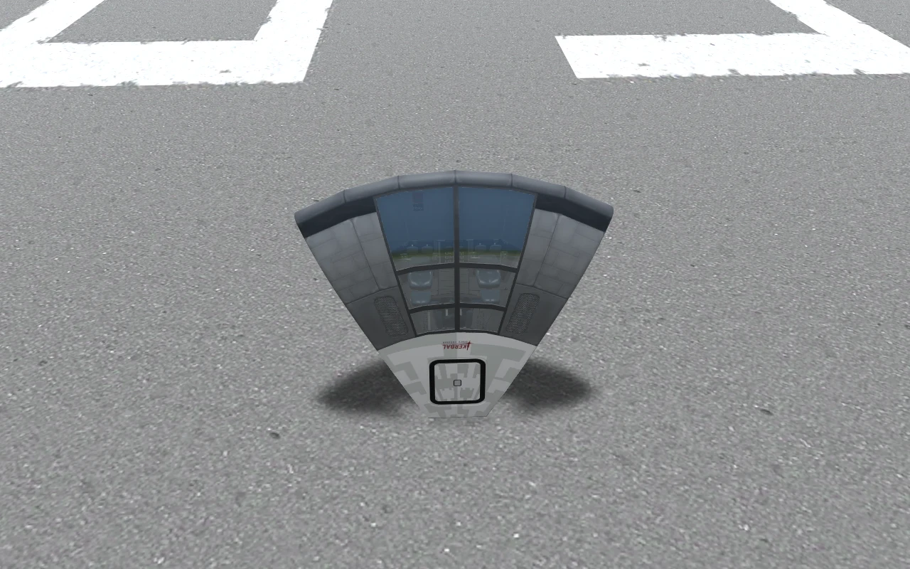
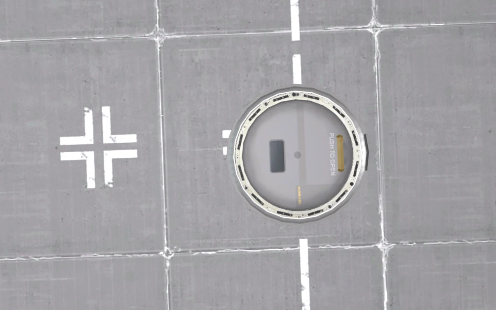
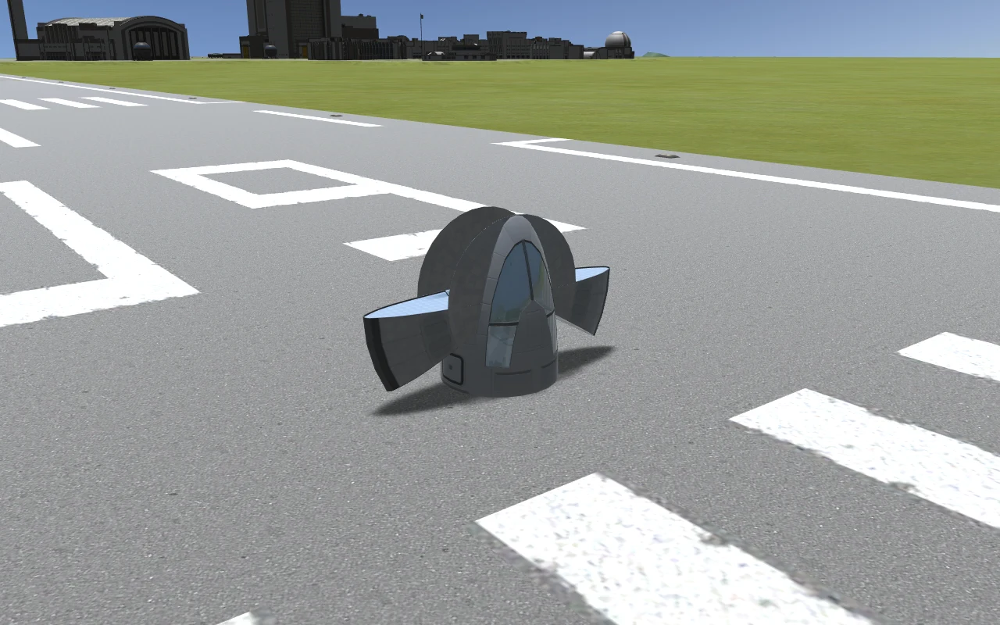

ShineFix home
← Back to supported mods
Flying Saucers
Optics verified
Human tested
Version v1.6.1
Compatibility evidence
Original screenshot gallery
Parts
A-51 "Flapjack" Cockpit

A-51 Conference Room
A-51 Crew Cabin
A-51 Docking Port

IXS Cockpit
